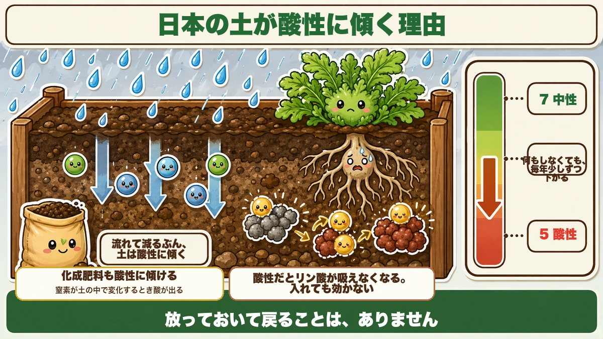
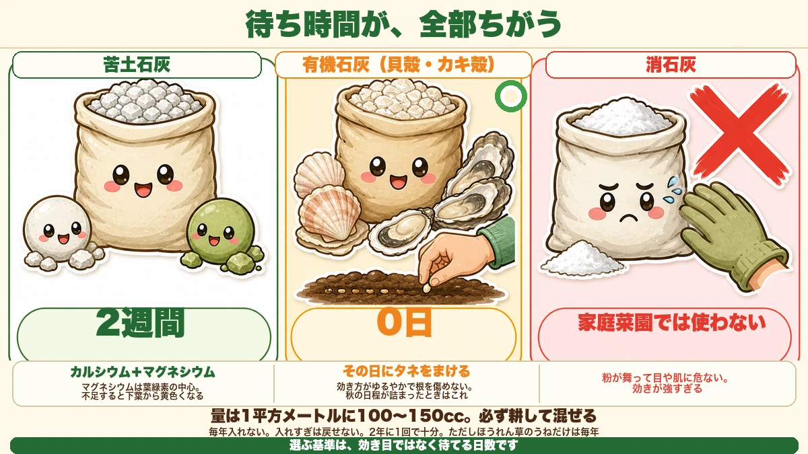
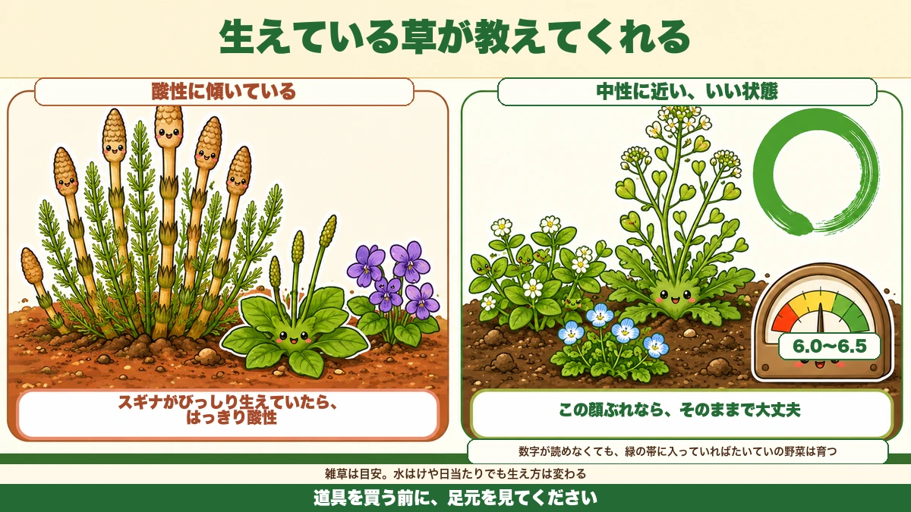

石灰は3種類あります🧪 まいた翌日にタネをまけるのは1つだけ

🧪「石灰って、とりあえずまいておけばいいんですよね？」
🧪「まいた次の日にタネをまいたら、芽が出なかった」
🧪「酸度計を買ったけど、数字を見ても何をすればいいか分からない」
どうも、8150（えいこう）です🌱 家庭菜園歴8年、理科の教員免許を持っていて、有機・無農薬で野菜を育てています。
今日は、石灰の話です。地味ですが、★ここを外すと何をやってもうまくいかない、土台の話です。
先に、この記事でいちばん言いたいことを言っておきますね。
★石灰は3種類あって、まいてからタネをまけるまでの待ち時間が全部ちがいます。
いちばん多い失敗は、★苦土石灰をまいた翌日にタネをまくことです。これで発芽しないケースを、何度も見てきました。
なぜ、日本の土は酸性に傾くのか

犯人は、雨です
日本は雨が多い国です。★雨は、土の中のカルシウムやマグネシウムを、下へ下へと流していきます。
カルシウムとマグネシウムは、土をアルカリ寄りに保つ役目をしています。★それが流れて減るぶん、土は酸性に傾いていきます。
だから★何もしなくても、畑は毎年少しずつ酸性になります。放っておけば勝手に戻る、ということはありません。
肥料も、酸性に傾けます
もうひとつ。★化成肥料を使うと、そのぶん土は酸性に寄ります。
肥料の中の窒素が土の中で変化するとき、酸が出るからです。★毎年きちんと肥料をやっている畑ほど、実は酸性が進みやすい。
「ちゃんと世話をしているのに、だんだん育ちが悪くなる」の正体が、これだったりします。
酸性だと、何が困るのか
肥料が効かなくなります。
土が酸性に傾くと、★リン酸が土の中の鉄やアルミとくっついて、根が吸えない形になります。
★入れているのに効かない。これがいちばん困る状態です。肥料を足しても解決しません。土のほうを直さないと、いつまでも同じです。
3種類の石灰、それぞれの役目

① 苦土石灰 ー 待ち時間2週間
いちばんよく売られているのがこれです。★カルシウムに加えて、マグネシウム（苦土）が入っています。
マグネシウムは★葉緑素の中心にある成分で、これが足りないと下の葉から黄色くなります。だから苦土石灰は、酸度直しと栄養補給を同時にやれます。
ただし★効き始めるまでに時間がかかります。まいてよく混ぜたら、★2週間あけてから植えてください。
② 有機石灰 ー その日にまける
貝殻やカキ殻を砕いたものです。★これがいちばん扱いやすいと思っています。
理由は★まいたその日にタネをまける点です。効き方がゆるやかで、根を傷めません。
秋は日程が詰まります。★2週間待てないときは、迷わずこれです。値段は苦土石灰より高いですが、待ち時間を買っていると思えば安いです。
③ 消石灰 ー 家庭菜園では使わない
強いアルカリで、効果は一番はっきり出ます。★でも家庭菜園ではおすすめしません。
粉が細かくて舞いやすく、★目や肌に入ると危ないからです。しかも効きが強すぎて、加減が難しい。
畑が広くて、しっかり装備できる方以外は、★苦土石灰か有機石灰の2択で十分です。
どれくらいまくのか
基本は1平方メートルに100〜150cc
計量カップ1杯が200ccなので、★その半分から4分の3くらいです。
これを★まいてから、しっかり耕して混ぜます。表面に置いただけでは効きません。石灰は水に溶けにくいので、土と触れていないと反応しないんです。
毎年まかなくていい
ここは大事なところです。★石灰は、入れすぎると戻せません。
アルカリに寄りすぎると、今度は★鉄やマンガンが吸えなくなって、新しい葉が黄色くなります。しかも酸性に戻すのは、アルカリにするよりずっと大変です。
私は★2年に1回、うねを作り直すときだけ入れています。毎年の習慣にはしていません。
例外は、ほうれん草
ほうれん草だけは別です。★pH6.5〜7という、かなりアルカリ寄りを好みます。
ほうれん草をまくうねだけは、★毎年きちんと石灰を入れてください。ここを手抜きすると、まず芽が出ません。
酸度計がなくても、だいたい分かります

生えている雑草を見る
道具を買わなくても、目安は分かります。★その土地に生えている雑草が、土の性格を教えてくれます。
- ★スギナ、オオバコ、スミレが多い … 酸性に傾いている
- ★ハコベ、オオイヌノフグリ、ナズナが多い … 中性に近い、いい状態
とくに★スギナがびっしり生えている場所は、はっきり酸性です。スギナは酸性に強くて、他の草が育ちにくい場所でも平気だからです。
ただし、目安です
雑草はあくまで目安で、★水はけや日当たりでも生え方は変わります。
きちんと知りたいなら、酸度計を1本持っておくと安心です。★数字が読めなくても、6.0から6.5のあいだに針が入っていれば、たいていの野菜は育ちます。
学ぶ：pHという数字の正体🔬
理科の時間です。
pHは★水の中の水素イオンの多さを表す数字です。7が真ん中、小さいほど酸性、大きいほどアルカリ性です。
面白いのは、★この数字が1つ変わると、酸の強さは10倍変わることです。
pH5とpH6は、見た目には1しか違いません。★でも実際の酸の量は10倍ちがいます。pH4とpH6なら100倍です。
★だから「ちょっと酸性」で済ませてはいけないんです。数字の1は、体感より大きい。
お子さんと一緒なら、★紫キャベツを刻んで熱いお湯につけてみてください。紫色の汁ができます。
これに★お酢を垂らすと赤に、重曹を溶かした水を垂らすと緑や青に変わります。★紫キャベツの色素が、酸性かアルカリ性かで形を変えるからです。
畑の土を水に溶かして、その上ずみを垂らしてみるのも面白いです。★赤っぽく寄れば、その土は酸性です。
まとめ
ここまで読んでくださって、ありがとうございました。
石灰は、選び方さえ分かればこわくありません。
- ★日本の土は雨と肥料で、毎年少しずつ酸性に傾く
- ★酸性だとリン酸が吸えなくなる。肥料を足しても解決しない
- ★苦土石灰＝マグネシウム入り。まいたら2週間あける
- ★有機石灰（貝殻・カキ殻）＝その日にタネをまける。秋はこれが便利
- ★消石灰は家庭菜園では使わない。粉が舞って危ない
- ★量は1平方メートルに100〜150cc。必ず耕して混ぜる
- ★毎年入れない。入れすぎは戻せない。2年に1回で十分
- ★ほうれん草のうねだけは例外。毎年しっかり入れる
- ★スギナが多い場所は酸性。雑草でだいたい分かる
全部やろうとしなくて大丈夫です。まずは畑を歩いて、★スギナが生えているところを探してみてください。そこが、いちばん先に直すべき場所です🧪
次回は、鳥と獣の話。★11月から急にヒヨドリが来る理由をお話しします🐦
貝殻石灰（有機石灰）
まいたその日にタネをまけます。秋の日程が詰まったときはこれ一択です。
![[商品価格に関しましては、リンクが作成された時点と現時点で情報が変更されている場合がございます。]](https://hbb.afl.rakuten.co.jp/hgb/56d21b6a.c19127f6.56d21b6b.c5473e84/?me_id=1258048&item_id=10000067&pc=https%3A%2F%2Fthumbnail.image.rakuten.co.jp%2F%400_mall%2Fkaneashop%2Fcabinet%2F12084383%2F12419790%2Fimgrc0108924525.jpg%3F_ex%3D240x240&s=240x240&t=picttext "[商品価格に関しましては、リンクが作成された時点と現時点で情報が変更されている場合がございます。]")

苦土石灰
マグネシウムも補えます。ただし、まいてから2週間あけてください。
![[商品価格に関しましては、リンクが作成された時点と現時点で情報が変更されている場合がございます。]](https://hbb.afl.rakuten.co.jp/hgb/55e75fe5.20db4cd1.55e75fe7.d1ec32cc/?me_id=1194164&item_id=10000709&pc=https%3A%2F%2Fthumbnail.image.rakuten.co.jp%2F%400_mall%2Fgardening%2Fcabinet%2Fikou_20091001_001%2Fimg1043676078.jpg%3F_ex%3D240x240&s=240x240&t=picttext "[商品価格に関しましては、リンクが作成された時点と現時点で情報が変更されている場合がございます。]")
ほうれん草のタネ
ほうれん草だけは例外で、毎年きちんと石灰を入れるうねが要ります。
![[商品価格に関しましては、リンクが作成された時点と現時点で情報が変更されている場合がございます。]](https://hbb.afl.rakuten.co.jp/hgb/56d218b8.a80573a6.56d218b9.1d398fba/?me_id=1241438&item_id=10032053&pc=https%3A%2F%2Fthumbnail.image.rakuten.co.jp%2F%400_mall%2Fnogyoya%2Fcabinet%2Fcube7%2F2246239_2.jpg%3F_ex%3D240x240&s=240x240&t=picttext "[商品価格に関しましては、リンクが作成された時点と現時点で情報が変更されている場合がございます。]")
備中鍬
石灰は表面に置いても効きません。必ず耕して土と混ぜてください。
![[商品価格に関しましては、リンクが作成された時点と現時点で情報が変更されている場合がございます。]](https://hbb.afl.rakuten.co.jp/hgb/56d752c3.3ce6fd3b.56d752c4.f8896826/?me_id=1209220&item_id=10002030&pc=https%3A%2F%2Fthumbnail.image.rakuten.co.jp%2F%400_mall%2Fhonmamon-r%2Fcabinet%2Fimg3%2Fw4580149745643.jpg%3F_ex%3D240x240&s=240x240&t=picttext "[商品価格に関しましては、リンクが作成された時点と現時点で情報が変更されている場合がございます。]")
あわせて読みたい